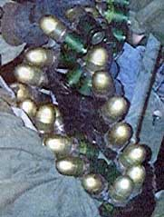

Violent confrontations erupted this morning after an evening of Israeli attacks by heavy machine gunfire throughout the evening on 3 neighborhoods in Hebron. The attacks continued until this morning. A mass funeral procession took place this afternoon for Fayez Mahmoud Al Qaimari, 32 years old from Hebron, who was shot and killed yesterday by live ammunition to his head. Clashes erupted following the funeral procession in Halhoul. Na'el Ali Zama'ri, 25 years old, from Halhoul, Hebron, was shot and killed by live ammunition to his chest. At least 10 Palestinians were injured, 1 of which is in critical condition.
In Samu', a mass protest rally took place against the killing yesterday of Majed Ibrahim Hawamdeh, 15 years old, from Al Tireh, Ramallah, whose relatives are from Samu'. The rally was ambushed by Israeli settlers and soldiers who came out from behind trees in the area and opened fire on the crowd. Imad Ismail Hawamdeh, 23 years old from Samu', Hebron, was shot and killed by live ammunition to his head as a result of the attack, with at least 30 others injured. Clashes erupted shortly afterwards.
Israeli controlled areas of Hebron remain under Israeli imposed curfew for the 23rd consecutive day.
Nablus
Villages within the Nablus area remain isolated, despite reports of the lifting of the internal closure. The village of Huwarra remains under Israeli imposed curfew for the 15th consecutive day. Israeli settlers and soldiers continue to block access to roads and are preventing villagers from reaching their orchards to harvest olives. A number of Israeli settler attacks have been reported on Palestinian farmers trying to reach their olive orchards, in addition to Palestinian cars on main roads leading to Ramallah and Jenin.
Ramallah
Clashes erupted this afternoon on the northern entrance of Ramallah following the funeral of 15-year-old Majed Ibrahim Hawamdeh, shot and killed yesterday by live ammunition to his head. At least 8 Palestinians were reported injured. Reports state that the Israeli military was using heavy machine gunfire against protesters both today and yesterday.** Residential areas were also attacked yesterday by heavy machine gun fire, causing damage to several homes.
Gunfire is currently being reported from the Pisgot settlement on the outskirts of Al Bireh. No further information is available.
Qalqilya
The area of Qalqilya is isolated, with residents unable to leave the area. Israeli settlers and soldiers have been bulldozing Palestinian olive orchards in the area and attacking Palestinian farmers attempting to reach their orchards. Ambulances have been prevented from leaving or entering the area, including those transporting residents who receive regular medical treatment. Brief clashes were reported this afternoon near the southern entrance of Qalqilya. No serious injuries have been reported.
Salfit
The situation of Salfit is similar to that of Qalqilya, with the area in isolation and Israeli settler attacks reported. Brief clashes were reported, resulting in 5 Palestinians injured, one reported to be in critical condition.
Tulkarem
A mass funeral procession took place this afternoon for 18 year old Tareq Al Hantouleh from Silt Al Thaher, who was shot and killed yesterday by Israeli settlers with live ammunition to his head. Clashes erupted in a number of villages in the area. No serious injuries were reported.
Jenin area
Clashes erupted this afternoon in Jenin, Silt Al Thaher, 'Arrabi and Ya'bad. A total of 41 Palestinians were injured. Along the main Jenin-Nablus road, Israeli settlers attacked Palestinians traversing the road. Israeli military presence in the area has been increased, with main entrances to all villages sealed.
Bethlehem area
 In Hossan, Tqu' and Beit Fajjar, Israeli settlers attacked residents and homes this morning, following which clashes erupted.
In Hossan, Tqu' and Beit Fajjar, Israeli settlers attacked residents and homes this morning, following which clashes erupted.
Earlier this evening, Israeli attacks on areas in Beit Sahour were reported from heavy machine guns (Israeli soldiers with this type of ammunition is pictured on this page). 
At this moment, Israeli helicopters, artillery and tanks are attacking areas throughout Bethlehem, including Beit Jala, Aida Refugee Camp and Beit Sahour. The electricity has been cut off throughout the governerate of Bethlehem. Reports state that rocket attacks occurred on residential areas in all of the three areas and continue at the time of writing. Israeli helicopters continue to hover above Bethlehem. No further information is available.
Jericho
Protests took place this afternoon at the Karama Crossing to Jordan against the Israeli Authorities prevention of Palestinians traveling across the border, including ambulances. The Israeli military shot at protesters, with at least one Palestinian reported to be in critical condition.
Jerusalem
Jerusalem remains isolated. Reports of arrest campaigns continue throughout areas in Jerusalem.
Correction
In yesterday's Update#38--21 October 2000, Web posted 9:30 PM GMT+2, we reported the name of the Paris Match journalist as 'Jacobs Mariah'. His correct name is Jean-Marie Proget, 57 years old. He was shot in the chest by live ammunition, causing tearing in his lungs and internal bleeding in his chest. After undergoing successful surgery yesterday at Ramallah Hospital, he is in stable condition and will be transferred to France for further medical attention.